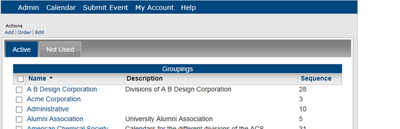
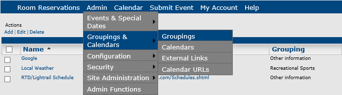
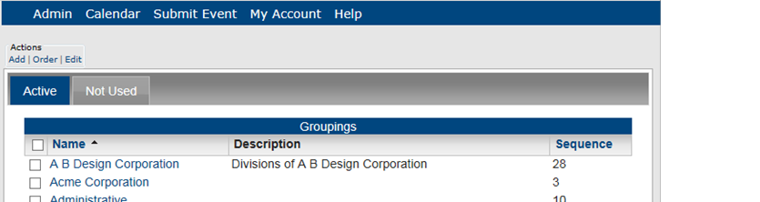
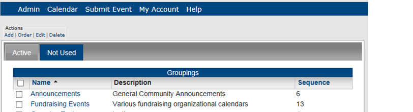
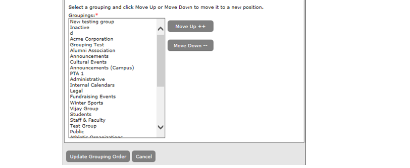
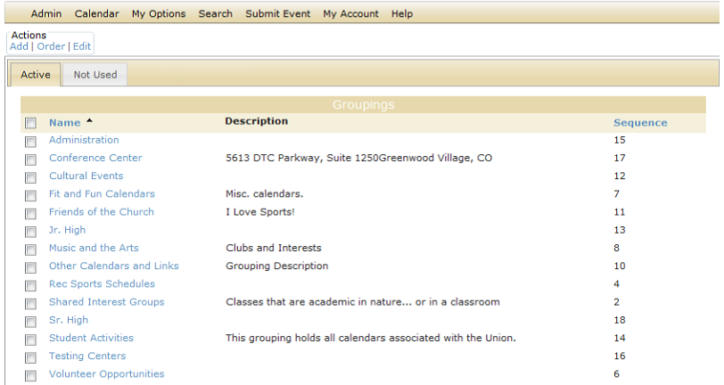
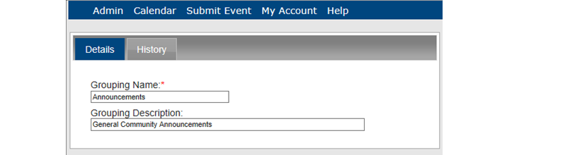
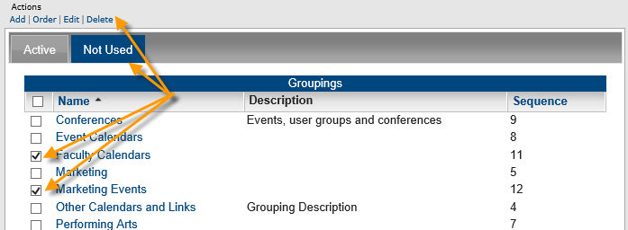

A grouping in Master Calendar is collection of one or more calendars typically used to distinguish one group of related calendars from another, or for identification purposes. For example, for a university calendar system, you might have a grouping for student union events, another grouping for athletic events, another grouping for invited speaker events, and so on.
Calendar groupings are displayed on the Groupings page. The Groupings page has an Active tab and Not Used tab. All currently active groupings in Master Calendar, which are groupings to which at least one calendar has been added, are displayed on the Active tab. All groupings that do not have at least one calendar added are displayed on the Not Used tab. By default, groupings are initially displayed on both tabs on the Groupings page in alphabetical order by grouping name, regardless of a grouping’s sequence.

You can view calendars in a single grouping or from multiple groupings together. If appropriate, you can add an event to multiple calendars in multiple groupings. This topic guides you in creating new groupings and working with existing ones.
Concept: When you create a new Calendar Grouping, first you define it, then you associate it with a calendar group. This then activates the grouping. If you do not associate your grouping with a calendar group, it will show in the Not Used tab shown below.

The Groupings page opens on the Active tab, which lists all the calendar groupings in use in Master Calendar.


By default, groupings are initially displayed on both tabs on the Groupings page in alphabetical order by grouping name, regardless of a grouping’s sequence. This is how calendar groupings display in dropdown lists to users. You have two options for changing the order of the groupings:


The Details tab opens, where you can change basic information and view history (on the History tab) for the grouping.

Tip: You can delete Calendar Groupings from the Not Used tab; select the item(s) and then click Delete.
